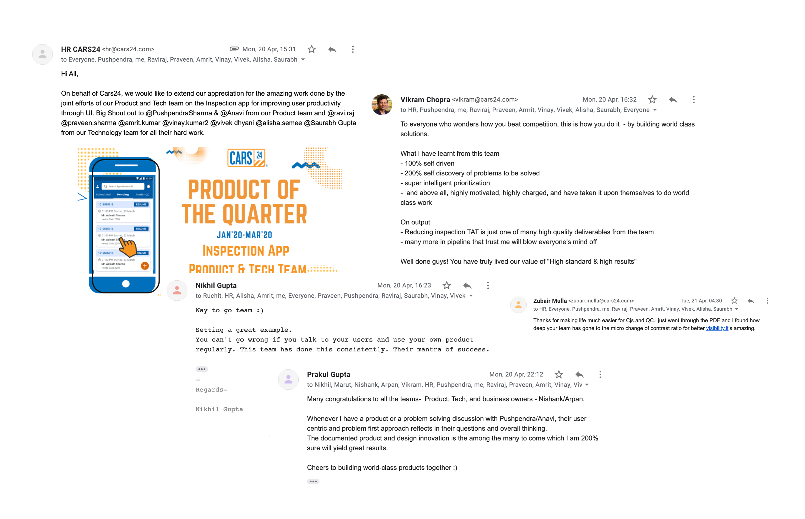

Back to Projects
Inspections are crucial to used car business, but inspecting a car is like filling in a login form for someone else, one with more than 300 fields.
It takes a long time while the customer awaits for their car to get checked, and a single mistake by the user can lead to reduction in wages.
The designs were created by developers according to business requirements, had dropdowns for even 2 options and had a very low visibility. The structure was not broken into chunks and there was a lot of to and fro navigation.
The environment and equipments of evaluators demotivate them from giving their best performance.
When I developed this hypothesis, I asked myself the following: what kind of data do I need to test this hypothesis? Where can I find quick customer feedback data? Where will I find users to validate my ideas?
We habitualized product review meetings where we did inspections by ourselves to step into the shoes of the user.
Team started biweekly store visits to identify how users work, which helped us identify user’s environmental issues.
We made a WhatsApp best evaluators group to learn. This was an easy way for user testing and rapid prototyping.
We recruited 10 strongest evaluators in Delhi onto a whatsapp group. During the interviews, I asked questions like “Tell me about your experience with CARS24?,” “Do you think your time on an inspection can be reduced?” “Is your work environment causing you any issues with your work?” and “Are company-provided devices working alright, or are there any problems with batteries?”
Based on my research, I feel confident that there is a recognizable amount of distrust in the employees. They are using the app for 10 hours daily. If we solve this problem, not only will employee morale go up, car sellers at CARS24 stores will have to wait shorter amount of time for their car to get inspected.
Help customers feel confident that they know they are being incentivized for hard work.
The data entry shouldn't feel cumbersome.
After understanding the users & problem deeper, I wrote down many ideas (even the ones that got weird looks from business people) to help me think of different ways to remove pain points. Our team also went through multiple revisions of different "How Might We" questions to help with a clear understanding of the issues at hand.
After generating a few ideas, I worked on 5 ideas and explored them in more detail.
Images were made contextual to the fields, instead of the way they were grouped earlier.
Sections were opened with one tap replacing redirection of the user to another screen.
The improvements were done in stages and the users did not require any platform training.
With a lot of design debt, there were a lot of places where clicks could be chipped away in Click To Actions and Dropdowns. These were replaced with information upfront for the evaluator.
Evaluators usually work in bright sunlight, and have to increase the device brightness. The buttons of the app were changed for higher visibility in sunlight conditions. For good accessibility standards, the contrast ratio of a text should be well above 4.5:1
Gratification was added to the end of user’s journey ie. finishing a long report in case they ended it within stipulated time.
Evaluators receive incentive for a report well judged. Earlier, they checked it through Google sheets and were left in the dark about how much was due.
A Performance Dashboard was conceived to improve their morale and make their incentives as transparent as possible.
After sharing the Invision prototypes with Car Evaluators, we got these responses.
The case study was recognized as Product of the Quarter (Jan- Apr 2020) for utilising UI improvements towards faster and better inspections. It went forward towards earning me Employee of the Month for January.
Next Project
{kind=link}
{kind=link}
{kind=link}
{kind=link}
{kind=link}
{kind=link}